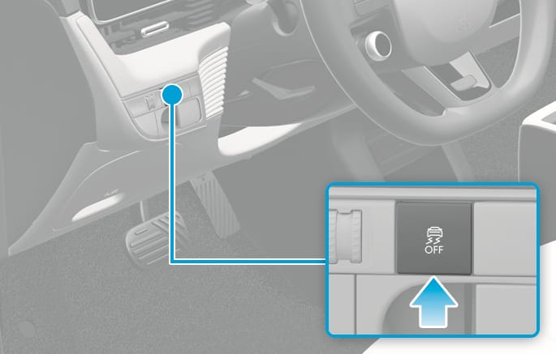

차체 자세 제어(ESC)
차체 자세 제어(Electronic Stability Control, ESC) 기능은 각종 센서가 수집한 주행 정보를 이용해 운전자의 의도를 판단하고, 각 바퀴에 제동력을 배분해 바퀴의 미끄러짐을 방지함으로써 차량의 거동을 안정적으로 유지합니다.
작동 상태
작동 정지 상태
-
시동 시 표시등이 켜지고, ESC 장치에 이상이 없으면 약 3초 후 꺼집니다.
-
기능 작동 중 클러스터에 차체 자세 제어 작동 (
a ) 표시등이 깜빡이며 표시됩니다. -
ESC 작동 표시등이 계속 켜져 있거나 주행 중 켜지는 경우 기능에 이상이 발생한 것을 의미하므로, 당사 직영 하이테크센터나 블루핸즈에서 차량을 점검하십시오 .
-
곡선 도로, 눈 덮인 도로, 노면이 얼어있는 도로 등 차량이 미끄러지기 쉬운 구간에서는 차체 자세 제어 기능에 의존하지 말고 안전한 방법으로 주행하십시오.
-
차체 자세 제어 기능이 작동해 표시등이 깜빡이는 경우 차량을 가속하지 말고 서행하십시오.
시동 후 출발할 때 저속에서 차체 자세 제어 기능의 자체 진단음이 작게 들릴 수 있습니다. 이런 현상은 이상이 아니며, 차체 자세 제어 기능이 정상적으로 작동하고 있다는 것을 의미합니다.
차량의 시동을 걸면 차체 자세 제어 기능이 자동으로 켜집니다(작동 대기).
-
주행 중 차량의 미끄러짐이 감지되면 자동 제어 기능이 작동해 구동력과 제동력을 자동으로 제어합니다.
-
기능 작동 중 클러스터에 차체 자세 제어 작동(
a ) 표시등이 깜빡이며 표시됩니다.
-
기능 작동 중 차량의 구동력과 제동력을 제어하는 과정에서 약간의 진동이 느껴질 수 있습니다.
-
구동력과 제동력이 자동으로 제어되므로, 미끄러운 구간을 탈출하기 위해 운전자가 가속 페달을 밟아도 모터 회전수가 상승하지 않을 수 있습니다.
차량 검사 시 측정 오류를 방지하거나 특정 환경에서 차체 자세 제어 기능의 과도한 개입을 피하려는 경우 차체 자세 제어 기능을 해제할 수 있습니다.
-
안전한 주행을 위해 반드시 필요한 경우에만 차체 자세 제어 기능을 해제하고, 차량 검사가 완료되거나 특정 상황이 종료된 후에는 차체 자세 제어 기능을 다시 켜십시오.
-
차체 자세 제어 기능이 작동해 표시등이 깜빡이는 동안에는 차체 자세 제어 기능을 해제하지 마십시오. 미끄러운 노면이나 곡선 도로에서 빠르게 가속하는 중 차체 자세 제어 기능을 끄면 차량이 갑자기 미끄러져 심각한 사고가 발생할 수 있습니다.
-
주행 중 차체 자세 제어 기능을 정지해야 하는 경우, 평탄한 직선 도로에서 정속으로 주행하는 동안에만 차체 자세 제어 정지(
d ) 버튼을 누르십시오.
-
차체 자세 제어 기능을 해제해도 ABS 기능과 제동 성능은 정상적으로 유지됩니다.
-
기능을 해제한 후에도 주행 중 안전을 위해 필요한 경우 차체 자세 제어 기능이 작동할 수 있습니다.
-
차량 검사 시 측정 오류를 방지하려면 '2단계 OFF' 절차에 따라 구동력 제어, 제동 제어 및 샤시 통합 제어 기능을 모두 해제해야 합니다.

2C_ESCOffButtion
1단계 OFF(구동력 제어 해제)
시동을 켠 후 차체 자세 제어 정지(
-
클러스터에 기능 작동 제한 메시지가 표시되고 차체 자세 제어 정지(
b ) 표시등이 켜집니다.
-
1단계 OFF 중에는 구동력 제어 기능이 꺼지지만 제동 제어 기능은 계속 작동합니다.
-
시동을 껐다 켜거나 차체 자세 제어 정지(
d ) 버튼을 다시 누르면 차체 자세 제어 기능이 켜지고 차체 자세 제어 정지(b ) 표시등이 꺼집니다.
2단계 OFF(구동력/제동 제어 및 샤시 통합 제어 해제)
차체 자세 제어 정지(
-
클러스터에 기능 해제 메시지가 표시되고, 차체 자세 제어 정지(
b ) 표시등이 켜지며 알림음이 울립니다.
-
2단계 OFF 중에는 구동력 제어, 제동 제어, 샤시 통합 제어(VSM) 기능이 모두 꺼져 차체의 자동 제어 기능이 해제됩니다.
-
시동을 껐다 켜거나 차체 자세 제어 정지(
d ) 버튼을 다시 누르면 차체 자세 제어 기능이 켜지고 차체 자세 제어 정지(b ) 표시등이 꺼집니다.